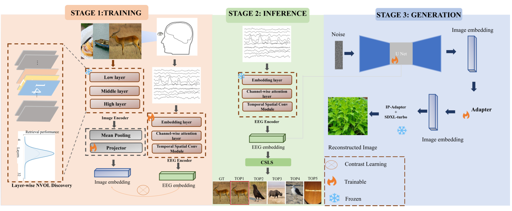
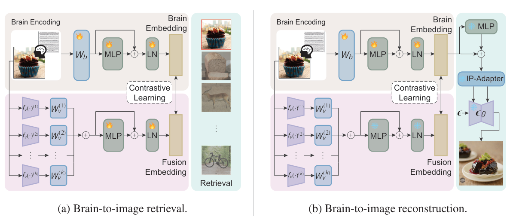
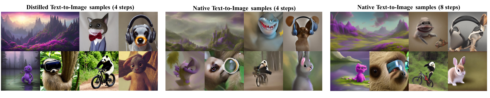
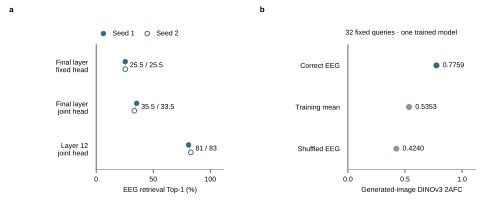
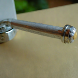
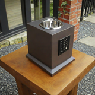
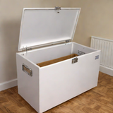
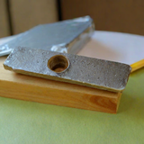
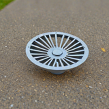
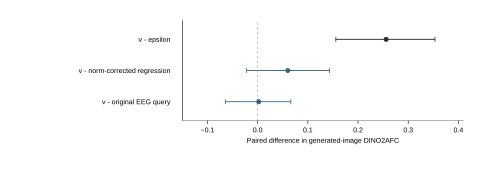

01 / LITERATURE · 视觉表征、生成接口与去噪响应蒸馏
EEG-based Visual Retrieval and Reconstruction: From Neurally Visible Optimal Layer to Hierarchical Diffusion Generation
任务：看图 EEG → 在 200 个未见概念中检索图片，或不依赖图库直接重建图片。数据为 THINGS-EEG：10 名被试，训练集 1,654 个概念 × 10 张图 × 4 次重复；测试集 200 个新概念，各 1 张图、80 次重复。检索分别评估被试内训练和留一被试泛化。

Original Fig. 1 · PDF p.3
模型：先解码 EEG 可见的中间层，再转成生成条件
EEG 端采用 ATM：时空卷积提取局部波形，Transformer 汇总全局信息，输出 1,024 维向量。图片端采用 CLIP ViT-H/14。作者逐层筛查后，取第 10、12、14 层的 token 均值，各自投影到 1,024 维，再以可学习权重融合。这些较易从 EEG 读取的中层特征称为 NVOL。
训练与推理分三步
- 学习检索表征。用配对 EEG 和训练图片做双向 InfoNCE，使正确配对在批内更接近。对齐实验使用 AdamW、学习率 3 × 10−4、batch 100、30 epochs。检索时用 CSLS 校正相似度，减少少数图片反复成为近邻的偏置；它改变的是候选排名。
- 训练语义扩散先验。将 EEG 向量作为条件，用 DDPM 预测中间视觉向量。除噪声预测损失外，还约束干净向量的 MSE、余弦方向、批内成对几何及方差／协方差，抑制表征坍塌。
- 接入图像生成器。生成路径用适配器将第 12 层表征转到末层 CLIP 条件；同时训练真实中层输入和先验生成输入，使两条路径保持一致。测试时依次运行 EEG → 先验 → 适配器 → IP-Adapter → 冻结 SDXL，不读取目标图片特征。
ORIGINAL READING NOTE · P.2
结果：检索提升与图片重建分别看
Original Table II · PDF p.5 · 200-way retrieval, Top-1 / Top-5 (%).
读 Avg 列：被试内多层融合的 Top-1 为 78.1%，加入 CSLS 后为 86.4%；留一被试时，融合加 CSLS 为 19.9%。因此 86.4% 包含检索后处理的作用，不能全部解释为 EEG 编码器改善，更不能读作图片还原率。
Original Table III · PDF p.7 · Image reconstruction, subject-08.
这张表只报告 sub-08。两阶段 TS-Diff 相对单阶段 SS-Diff，PixCorr 从 0.165 到 0.176，SSIM 从 0.326 到 0.366，CLIP 从 0.780 到 0.799；SwAV 距离越低越好，从 0.571 降到 0.552。它支持分阶段映射的价值，但不是所有指标都超过表内其他方法。
给我们的启发：中层监督是较强的起点；后续应固定编码器，单独比较“中层 → 生成条件”的映射，再用实际图片验证。我们的第 12 层联合头实验与这一表征选择问题直接对应。
Learning Brain Representation with Hierarchical Visual Embeddings
任务：从观看图片时的 EEG／MEG 做 200-way 图片检索与图像重建。EEG 使用 THINGS-EEG 的 10 名被试、16,540 张训练图片和 200 张测试图片；同一刺激的重复在被试内平均，测试为 80 次重复。另在 4 名被试的 THINGS-MEG 上评估。

Original Fig. 1 · arXiv v1, PDF p.4
模型：把语义特征与局部细节融合成一个视觉目标
脑信号端是 MLP 投影模块 MBP：把通道 × 时间展开，经线性层、残差 MLP 和 LayerNorm 输出 1,024 维向量。视觉端的 HVF 把多个预训练编码器的特征投影、求和并经过残差 MLP。检索默认融合 CLIP RN50、ViT-B/32 和 SDXL VAE；VAE latent 展平后提供局部结构。生成时将 RN50 换成 ViT-H/14。
关键训练顺序：先让视觉条件能生成，再对齐 EEG
- 检索训练。配对 EEG 与融合视觉向量做双向 InfoNCE，视觉骨干保持冻结，学习脑侧投影和融合模块。使用 17 个枕顶通道，25 epochs、global batch 1,024、AdamW 峰值学习率 5 × 10−4，配合余弦衰减。测试在融合空间按余弦相似度检索。
- 用图片预训练 Fusion Prior。在约 130 万张 ImageNet-1k 图片上，训练 HVF、条件投影器和 IP-Adapter，冻结 SDXL-base UNet；以扩散噪声预测 MSE 优化，文本留空。分辨率 512 × 512，学习率 10−4，每 GPU batch 12，共 100k steps。这里的 prior 是视觉条件映射模块，不是另一个生成语义向量的 DDPM。
- 将脑信号接入已固定的生成空间。冻结预训练 HVF、条件投影器、IP-Adapter 与 UNet，仅用配对数据训练脑侧 MBP，使 EEG 向量对齐固定视觉目标。推理时 EEG → MBP → 条件投影 → IP-Adapter；实验采用 SDXL-Turbo 四步生成。
ORIGINAL READING NOTE · P.2
结果：检索用一套融合，重建用另一套条件流程
Original Table 1 · arXiv v1, PDF p.7 · Subject-averaged 200-way retrieval (%).
先看 EEG 两组列：被试内 Top-1 为 75.7%，跨被试为 20.0%；同表 UBP 为 50.9% 和 12.4%。这些是多被试平均的检索结果，使用了重复平均与融合表征；不是图片生成的正确率。
Original Table 2 · arXiv v1, PDF p.8 · Image reconstruction; EEG, MEG and subject-8 are separate groups.
EEG 的 Ours 行报告 PixCorr 0.195、SSIM 0.336、CLIP 0.808；subj-8 单列为 0.227、0.361、0.826。PixCorr 看像素相关，SSIM 看结构，CLIP 等看特征一致性，SwAV 为距离、越低越好。多指标并非全面提高，例如 EEG 平均 SSIM 仍低于 C.C.(All) 的 0.347。
给我们的启发：联合学习得到的检索空间需要有稳定的生成映射。可借鉴它的训练顺序：先检查视觉条件进入生成器后能否保留内容，再固定这条路径训练 EEG 对齐；将表征收益与接口收益分别比较。
On Distillation of Guided Diffusion Models
任务：把昂贵的 classifier-free guidance（CFG）教师蒸馏成少步生成模型。实验覆盖类别条件生成、文本生成、编辑与修复；这里重点读 Stable Diffusion 的文生图实验，理解如何直接监督去噪器的输出。

Original Fig. 7 · CVPR PDF p.6
模型：学生直接学习教师的导引响应
CFG 在每一步分别运行条件与无条件去噪器，再按导引强度 w 组合输出。论文使用相同类型的 UNet 学生，加入 w 的 Fourier embedding，让一次学生调用拟合这个组合后的预测；随后再压缩采样步数。监督对象是去噪输出，不是 CLIP 条件向量。
训练与推理分三步
- 蒸馏 CFG 输出。给训练图片加噪，在同一带噪状态上计算教师的条件与无条件预测。学生以加权 MSE 拟合组合输出，并学习不同 w 下的响应。学生从教师条件模型初始化。
- 逐级减少采样步数。让学生的一次更新拟合教师连续两次 DDIM 更新的终点；训练后将学生作为下一轮教师，反复将步数减半。文生图实验第一阶段训练 3,000 次更新，batch 512，w ∈ [2, 14]；后续每级 2,000 次更新，1／2／4 步版本延长到 20,000 次。
- 少步推理。从随机噪声开始，输入文本与 w，运行蒸馏后的学生，再由 VAE 解码。像素扩散与 latent 扩散分别评估；latent 实验先将公开 epsilon 教师微调为 v 预测教师。
ORIGINAL READING NOTE · P.2
结果：少步质量改善，代价要按模型调用计算
Original Table 2 · CVPR PDF p.6 · LAION 512 × 512, w = 8; FID ↓ / CLIP ↑.
每格依次是 FID／CLIP。四步时，蒸馏模型为 26.0 / 0.30，DPM++ 为 34.1 / 0.29；八步时，DPM++ 为 25.6 / 0.32，优于蒸馏模型的 26.9 / 0.30。表中 DPM／DPM++ 仍需条件与无条件两条预测，不能把相同步数视作相同模型调用成本。
与新方案的直接联系：这篇工作展示了如何把生成器输出作为蒸馏目标。我们的 A 方案研究在同一 EEG 采样状态上，学习真图条件与 EEG 条件的去噪响应差；保持现有采样步数，检验 EEG 能否预测有助于内容恢复的修正。
02 / FINDINGS
这两项支持实验分别检查：EEG 应该学习哪种视觉表征，以及生成图片是否利用了 EEG 与目标图片的配对关系。

图 1｜视觉目标选择与 EEG 配对消融。a，比较 EEG 对齐不同 CLIP 视觉表征后的 200-way 检索表现；实心与空心点为两个固定训练种子，不是置信区间。b，比较正确 EEG、训练均值与打乱 EEG 条件下的实际生成图片；点为 32 个固定查询的 DINOv3 2AFC 均值。
A. 视觉表征对齐：什么监督目标更容易从 EEG 学到？
实验设计。在 sub-01 上使用全 16,540 张训练图片，比较最终 CLIP-H 特征固定、最终层加联合视觉头、第 12 层 token 均值加联合视觉头三种配置。评价时使用 80 次 EEG 重复平均，在 200 张候选图片中检索；每种配置包含两个固定训练种子。
实验支持。末层固定为 25.5% / 25.5%，末层联合头为 35.5% / 33.5%，第 12 层联合头为 81% / 83%。中层联合头的平均 Top-1 为 82.0%，较末层联合头提高 47.5 个百分点，说明当前设置中视觉监督目标的选择明显影响可用解码表现。输入宽度和视觉头参数也发生变化，因此不能把全部差异归因于一个完全隔离的层级因素。
为下一步提供的方向。优先保留这套较强的中层视觉表征，固定 EEG 编码器后，再比较进入生成器的条件映射与先验机制。这样可以检查新增收益来自生成接口还是重新训练了更强的编码器。这里建立的是检索基础；mean80 的检索结果尚不能说明单次 EEG 或实际图片已经获得同等改善。
B. EEG 配对消融：生成器是否使用了目标相关脑电信息？
实验设计。在另一套固定的 SDXL 生成流程中，对同一组 32 个开发查询分别输入正确 EEG、训练集平均条件和循环打乱后的 EEG。使用独立于 CLIP 条件的 DINOv3 特征，将生成图与匹配原图及其余 199 张干扰图比较。该实验来自单被试、一个训练种子。
实验支持。正确 EEG、训练均值和打乱 EEG 的图像 2AFC 分别为 0.7759、0.5353 和 0.4240。正确减打乱为 +0.3519，归档的配对图片 95% 区间为 [+0.2569, +0.4513]，支持 EEG 配对提供了一些目标相关信息。但正确 EEG 的 200 图库 Top-1 仍只有 1/32，表明这种信息尚不足以稳定恢复具体图片身份。
为下一步提供的方向。生成端应继续保留正确、打乱和缺失 EEG 对照，检查候选机制是否真正增加了目标相关内容，而不只是让画面更自然。主判断应转向实际图片的对象、属性和结构一致性；向量检索分数与内部兼容损失用于诊断，不能替代图片重建评价。
03 / GENERATED IMAGES
画面可以清晰，内容仍可能错误
这是 EEG 条件生成的对照实验：在固定的 SDXL 流程中，比较正确 EEG、没有单条查询信息的训练均值、打乱 EEG，以及真图特征参考四种条件。下方展示 jeep、freezer 和 basil 三个目标，用来观察 EEG 配对是否改变了生成内容，以及具体物体是否被恢复。所有格子均为生成图，真图特征列仅作不可部署的生成参考。
Correct EEG
Training mean
Shuffled EEG
Image-feature
reference*
jeepquery 99
freezerquery 78



basilquery 6


EEG 配对提供了一些目标相关信息，但当前展示的图片重建能力仍然很弱。正确条件与打乱条件的整体指标存在差异，并不意味着每张图都还原了目标物体。这组图适合作为失败分析保留，用于检查对象身份、视觉属性和生成条件在哪些环节发生偏离。
04 / MECHANISM CHECKS
修复了参照，还没有建立新机制优势
标准 v 参数化修复了当前 epsilon 配置的严重退化，但相对强直接 EEG 查询的优势尚未确认。

图 2｜同一图片实验中的配对比较。32 个源概念、两个固定训练种子，共 576 张新图。点为均值差，误差线为归档的描述性 95% 区间；虚线表示零差。标准 v 是已有工具，不计作我们的新理论。
三行来自不同实验，不作横向排名。十项 idea 的结果、样本与限制
另一个有效修正：R4 条件匹配（仅语义向量）
另一套 R4 协议中，R1-trained prior 的 200-way R@1 为 5.67%，R4-trained prior 为 11.33%，直接编码为 17.50%。匹配增量 +5.67 pp [2.50, 9.17]，仍低于直接编码。该阶段没有新增图片，也不与 mean80 检索合并排名。
05 / PROPOSED EXPERIMENT
用 EEG 预测生成器的去噪响应
新方案是生成响应蒸馏（A）：让 EEG 学习图像生成器真正需要的去噪修正。固定现有 EEG 编码器与四步 SDXL-Turbo，把监督目标从匹配视觉向量转向匹配实际生成响应。
r*t = D(xt, t, cI) − D(xt, t, c)
DA = D(xt, t, c) + aθ(xt, t, c, b)
训练时，在 EEG 自由采样经过的同一状态 xt，分别输入真图条件 cI 与 EEG 条件 c；两次去噪输出之差构成教师响应 r*t。响应预测器读取当前状态与 EEG 表征 b，以加权 MSE 学习这项修正。
推理时，仅由 EEG 预测每一步的修正，并加入基础去噪输出。实验比较它与直接条件回归、常规适配训练的实际出图表现，重点检查对象内容是否更准确，以及画面质量和计算成本。
方案简述 · 方法参照：Guided distillation、DEFT